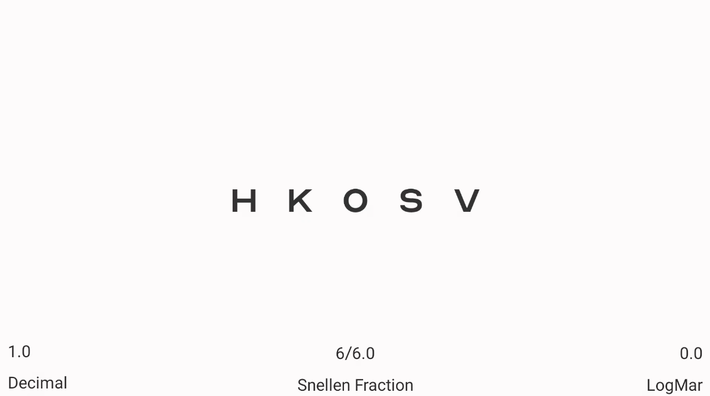

Project Occt

Kotlin
Android studio
I developped this app with the help of an ophtalmologist for the countries where digital
actuity tests aren't that common. It help make the test more affordable, using an android device
compatible with miracast and any screen of your choice.
The app cast on the secondary screen the different charts while transforming your smartphone
into a simple controller.The available charts are : LogMar, Lea, tumbling but also a duochrome
option and an astigmatism test. Plus a fun chart for the kids.
It is planned to be released at the first quarter of 2021.